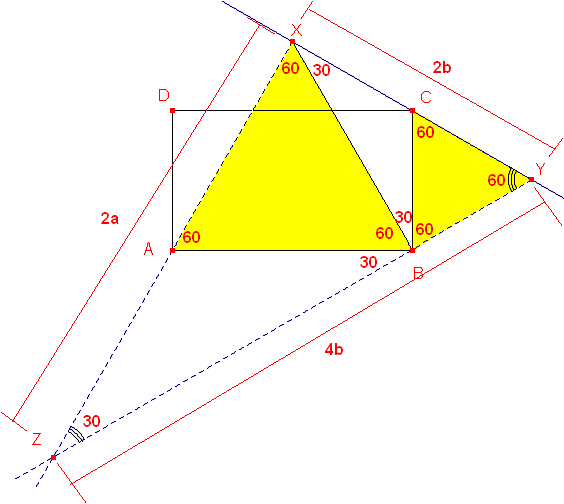

Problema 304
Dado el rectángulo ABCD, con a =AB (base) y b = BC ( la altura), y a>b desde la base AB se construye internamente el triángulo equilátero ABX, y desde la altura, b= BC, se construye exteriormente un triángulo equilátero BCY. Las rectas AX y BY se cortan en Z.
Se pide :
a) Hallar la relación entre la base y la altura del rectángulo para que los puntos X, C e Y, estén alineados.
b) Caracterizar y calcular en este caso todos los elementos significativos: lados, ángulos, medianas, bisectrices interiores y exteriores, radio inscrito y radio circunscrito del triángulo XYZ.
Romero, JB. (2006). Comunicación personal
Solución de William Rodríguez Chamache,profesor de geometria de la "Academia integral class" Trujillo- Perú
a) si los puntos X, C y Y son colineales entonces se genera el triángulo XYZ que es rectángulo en X

Luego la relación de los lados será
b)
1) Lados en función de b: 4b, 2b y
2) Lados en función de a:
3) Medianas:
4) Ángulos interiores:
5) Ángulos externos:
6) Radio inscrito:
7) Radio circunscrito: R = 2b